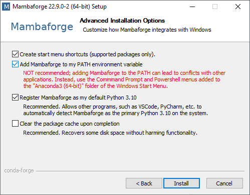

Setting up your computer#
This chapter provides instructions for setting up your computer before the tutorial.
Setting up Python and Conda environments#
When working with Python, we will make use of many plugins and software libraries which need to be organized. One way of doing this, is by managing Conda environments. A conda environment can be seen as a virtual desktop, or virtual computer, accessible via the terminal. If you install some software into one Conda environment, it may not be accessible from another environment. If a Conda environment breaks, e.g. incompatible software was installed, you can just make a new one and start over.
See also
Step 1: Install Miniforge#
Download and install mamba/conda. We recommend the distribution Miniforge.
For ease-of-use, it is recommended to install it for your use only and to add Conda to the PATH variable during installation.


Step 2: Install Python packages#
Use this command from the terminal:
mamba create --name prompt-env python=3.9 jupyterlab openai langchain scikit-image pandas matplotlib -c conda-forge
mamba activate prompt-env
pip install bia-bob
Tip: It is recommended to create one environment for every project you are executing. In that way installed software libraries and tools cannot harm each other.
Step 3: Configure OpenAI API Key#
Create an OpenAI API Key and add it to your environment variables as explained on this page.
Step 4: Testing the installation#
Afterwards, you can enter the environment to work with it. Whenever you want to work on the same project again, you should start a command line and enter this:
mamba activate prompt-env
Start Jupyter lab from the terminal like this
jupyter lab
A browser will open and show you the following web page. In the section Notebook click on “Python 3 (ipykernel)” to create a new notebook:

In the new notebook, click in the first code cell, enter print("Hello world") and hit SHIFT+ENTER on your keyboard.
If everything is installed properly, it should look like this: